CS184/284A Spring 2025 Homework 1 Write-Up
Link to webpage: cs184.eecs.berkeley.edu/sp25
Link to GitHub repository: cs184.eecs.berkeley.edu/sp25
Overview
Give a high-level overview of what you implemented in this homework. Think about what you've built as a whole. Share your thoughts on what interesting things you've learned from completing the homework.Task 1: Drawing Single-Color Triangles
Naive method: First computing the bounding box of the triangle by computing the minimum and maximum x and y values of the three points. Then make sure the triangle is counterclockwise. Mark the first point as A, the second point as B and the third point as C. Compute the cross product of AB and BC, if it's negative, then the triangle is clockwise and we need to swap B and C to make it counterclockwise. After that we iterate through each pixel in the bounding box and check if the pixel is inside the triangle by doing 3 line tests (using the method in the lecture slides).Extra credit: Use the scanline method to render the triangle. First, sort the three vertices by their y values. Then iterate from y0 to y1, and inside the loop iterate x from the left edge of the triangle to the right edge. Then iterate from y1 to y2 and do the same thing. The x values of edge is computed by adding the slope, avoiding multiplication operations to improve efficiency. Also, use tricks like calculating loop conditions beforehand to avoid calling the floor() function inside the loop to reduce overhead. Below is the timing comparison table in milliseconds.
| naive | scan |
| 1.1222 | 0.4692 |
Task 2: Antialiasing by Supersampling
I changed the size of the sample buffer to weight * height * supersampling_rate, and store the subpixel colors of a given pixel in consecutive locations in the sample buffer array. Inside the resolve_to_framebuffer function, when computing the color of a pixel, I average the colors of the corresponding subpixels in the sample buffer, and store the result to the framebuffer. When rasterizing a triangle, I divide the pixel into a grid of subpixels according to the supersampling rate, and check if each subpixel is inside the triangle to determine the color of the subpixel, then store the color of the subpixel in the sample buffer. Supersampling is useful because it acts as an approximate one pixel filter, which reduces signal frequencies above the Nyquist frequency, therefore reduces aliasing artifacts.Below are the rendered results and pixel inspector results under different supersampling rates for basic/test4.svg.
|
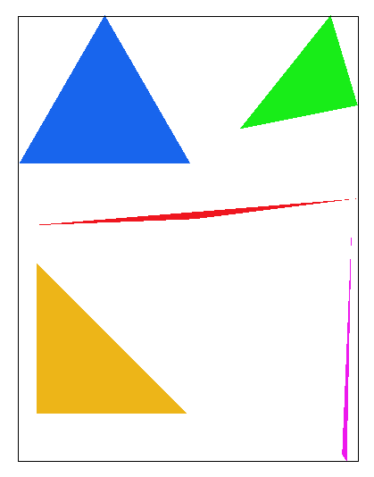
|
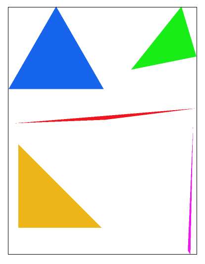
|
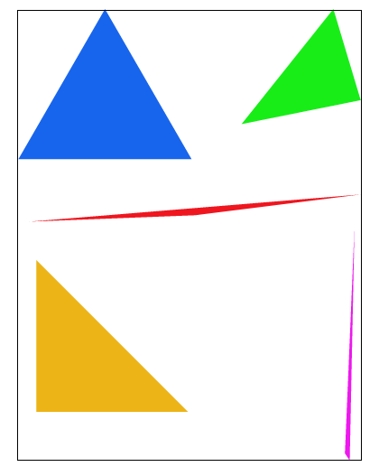
|
|
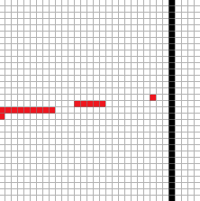
|

|
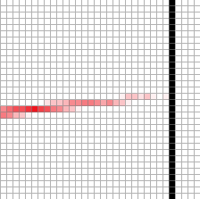
|
Explanation for the pixel inspector results: When supersampling rate is 1, if the center of the pixel is not inside the triangle, the whole pixel is white. So when the triangle is very thin, there will be discontinuity in the middle.
After increasing the supersampling rate, even if the center of the pixel is not inside the triangle, some subpixels can still be inside the triangle, so the pixel will be colored according to the ratio of subpixels inside the triangle, which makes the edges smoother.
Task 3: Transforms
I'm trying to make the robot stretch its body by raising its arms and widening its leg stance.Task 4: Barycentric coordinates
The barycentric coordinates describe how close a point is to each of the 3 vertices, in other words, the extent to which a point is influenced by the three vertices of the triangle. Intuitively, this can be computed by computing the area of the triangle formed by the point and each edge of the triangle, and dividing it by the area of the original triangle. As shown in the svg below, how close point P is to vertex A can be computed by S1/S_total (S_total = S1 + S2 + S3), because the closer P is to A, the larger S1 becomes, and the more P is influenced by A — so its color will also be closer to A's color. The same logic applies to the other vertices. 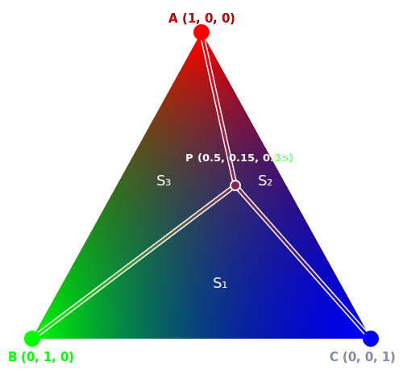
Task 5: "Pixel sampling" for texture mapping
Pixel sampling is to sample the color of a pixel from a texture image using texture coordinates. In my implementation, I first compute the texture coordinates for each pixel by interpolating the texture coordinates of the triangle vertices using barycentric coordinates. Then I use the texture coordinates to sample the color from the texture image and assign it to the pixel in the samplebuffer. The nearest sampling is simply taking the color of the nearest texel to the given texture coordinate. The bilinear sampling is using linear interpolation to compute the weighted average of the four nearest texels as the final color of the pixel.|
|
|
|
|
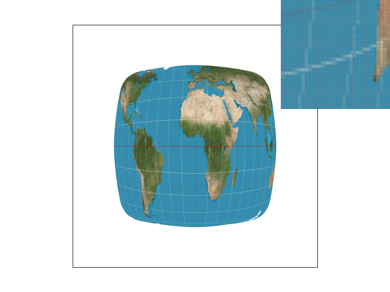
|
The white line is discontinuous when using nearest sampling at 1x supersample rate. And then using bilinear sampling under same supersample rate, the line became a little more smoother. And under 16x supersample rate, the line became really smooth both for nearest sampling and sampling.
Generally speaking, when the resolution of the texture image is lower than the rendering resolution, bilinear sampling will be significantly better than nearest sampling. This is because, when using nearest sampling, two adjacent pixels may sample the same texel in the texture image, leading to artifacts like jaggies. In contrast, if bilinear sampling is used, o adjacent pixels would not be exactly the same since it performs a weighted average of the four neighboring texels, therefore the result will looks smoother.
Task 6: "Level Sampling" with mipmaps for texture mapping
The idea of level sampling is that when the resolution of the texture is much higher than the rendering resolution, a pixel's footprint may cover multiple texels. To solve this, we precompute different levels of downsampled texture images, and when sampling the color of a pixel, we choose the closest texture level based on the side length of the pixel footprint.To implement this, I first compute the uv coordinate of (x+1, y) and (x, y+1), then subtract the uv coordinate of (x, y) to get \(\frac{d[u\ v]}{dx}\) and \(\frac{d[u\ v]}{dy}\), then I scale the u by the texture width and v by the texture height so that they represent real number of texels. Then I compute the \( L_2 \) norm for each of these vectors, and take the maximum as the final sampling level.
tradeoffs:
| method | speed | memory usage | antialiasing power |
| pixel sampling | fast, only need to read 4 texels and do 3 lerps | no additional memory needed | can only solve the magnification problem |
| level sampling | need to compute 2 more uv coordinates and do some extra calculations to determine the sampling level, but still pretty fast | need 33% moree memory to store the mipmaps | can solve the minification problem |
| supersampling | slow, need supersampling rate times more computations | need supersampling rate times more memory to store the sample buffer | can solve both magnification and minification problem |
|
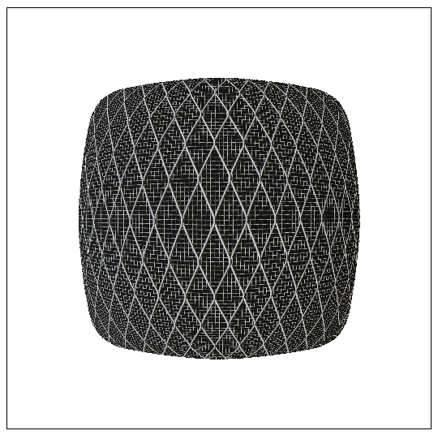
|
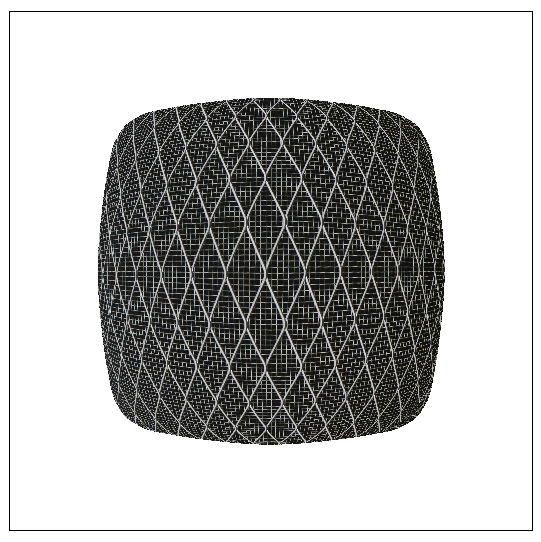
|
|
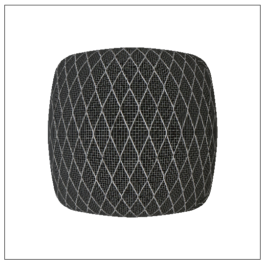
|
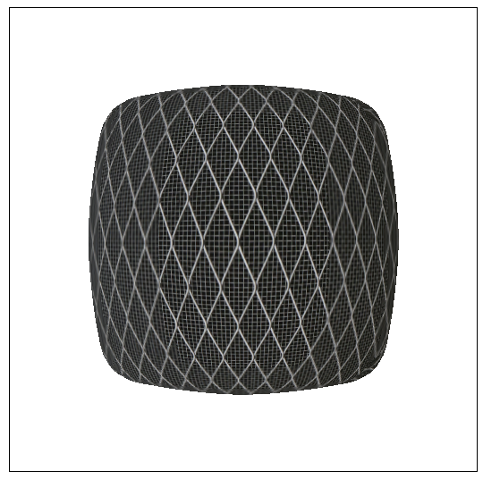
|